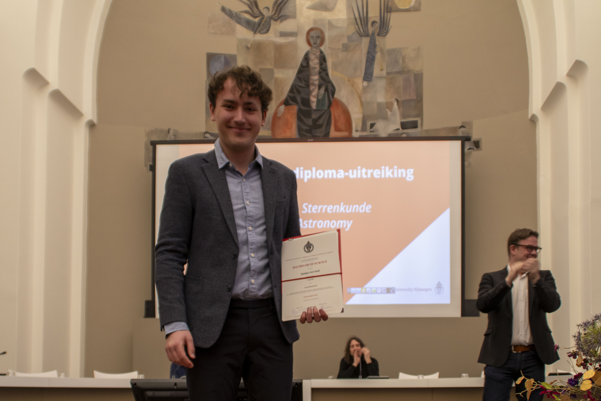

During my Master's internship, I investigated the electronic properties of topological quantum materials using high-field and cryogenic measurements. The project focused on magnetoresistance, superconductivity, and quantum oscillations.
I studied the Weyl semimetals WTe2 and PtBi2, as well as the magnetic topological insulator MnSb2Te4 using electronic transport and torque magnetometry measurements at cryogenic temperatures and in high magnetic fields.
In WTe2, I demonstrated that the magnetoresistance and Fermi surface can be tuned by both tensile and compressive uniaxial strain. In PtBi2, I found evidence for two-dimensional superconductivity, although the nature of the superconducting state remains under debate. In MnSb2Te4, I observed an unusual temperature dependence of the resistance with possible topological contributions.
Quantum Matter is the condensed matter physics specialization of the Master's programme in Physics and Astronomy at Radboud University.
Courses: Solid State Physics, Molecular Physics, Electrodynamics, Fundamentals of Magnetism, Scanning Probe Microscopy, Quantum Transport, Photonics, Laser-Matter Interaction, Computational Quantum Physics, Superconductivity, Condensed Matter Quantum Field Theory, Advanced Programming
During my Bachelor's internship, I investigated helicity-dependent all-optical switching (HD-AOS) of magnetization in nanometer-thin Pt/Co/Pt films. I compared the switching behavior of samples on a conventional glass substrate and on a novel 50 nm-thin silicon nitride substrate, demonstrating that HD-AOS can also be achieved on the thinner substrate. This enables future transmission electron microscopy studies of the magnetic domain structure.
HD-AOS is a phenomenon in which the direction of magnetization can be reversed using only circularly polarized laser light, without the need for additional magnetic fields or electric currents. I experimentally characterized the switching behavior of the samples using magneto-optical Faraday microscopy, including measurements of magnetic hysteresis loops and laser-induced changes in the magnetic domain structure.
A teaching assistant leads tutorials, answers student questions, provides guidance on exercises, and grades assignments. I assisted the course Warmteleer (Introduction to Thermodynamics) in the academic years 23/24 and 24/25.
The Bachelor's programme in Physics at Radboud University Nijmegen. I specialized in condensed matter physics by choosing all of the elective courses focused on this field.
Elective courses: Introduction to Nanoscience and Quantum Technology, Modern Topics in Condensed Matter Physics, Electronic Properties of Solids, Electronics, Experimental Techniques, Quantum Mechanics III (Condensed Matter Physics Track), Introduction to Machine Learning, Atomic and Molecular Physics, Gas Dynamics, Atmospheric Chemistry and Physics, Introduction to General Relativity, Tensors and Applications, Elementary Particles
